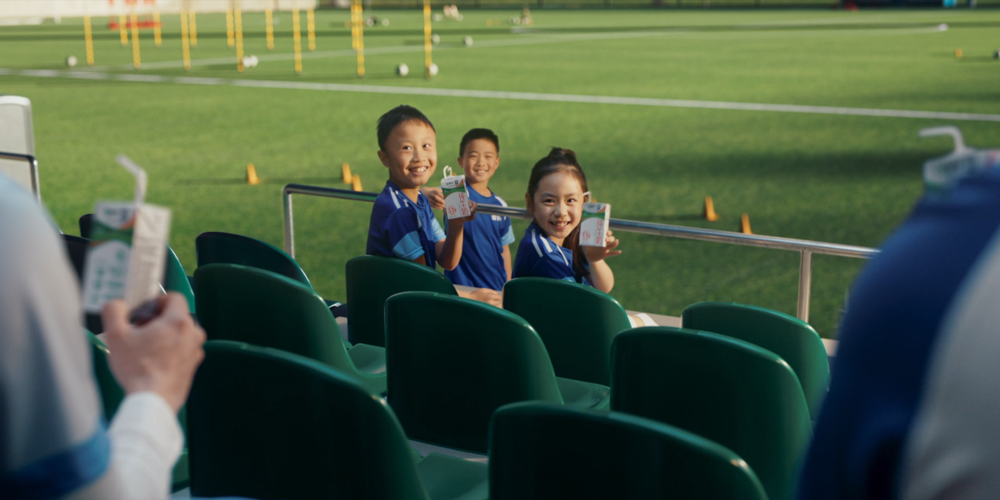

案例发生了什么

蒙牛在开赛日发布《冠军的秘密》，让梅西、姆巴佩与首次参加世界杯的亚马尔共同出演：年轻球员向两位世界冠军追问答案，梅西以中文“不慌”回应。品牌没有把资源押在单一球星夺冠，而是把三位代言人、2018 以来的球迷梗和普通青少年的热爱组织成一条可随赛果变化的内容线。
它解决的策略问题
这页要回答的不是“蒙牛：《冠军的秘密》 是否参与世界杯”，而是它如何通过“FIFA 赞助 + 三球星资产”回应“资源溢出与“放下冠军”的赛后收束”这一业务问题。
资源如何变成行动
FIFA 赞助 + 三球星资产
把“资源溢出与“放下冠军”的赛后收束”从赛事术语翻译成用户能理解的产品、体验或情绪理由。
赛场/转播建立权威感，内容、零售、活动或服务负责把一次看见变成多次接触。
优先观察商品、门店、电商、会员或长期社区项目是否接住了赛事关注。
动作拆解
- 赛前将三位处于不同职业阶段的球星放进同一叙事，提前覆盖多个赛果分支。
- 用“不慌”承接 2018、2022 已沉淀的球迷语言，使新片不是一次性的球星拼盘。
- 影片结尾让普通青少年和产品进入画面，把“冠军”从领奖台扩展到坚持与参与。
- 赛后官网再以决赛相遇、围挡文案和品牌复盘完成第二轮解释。
深度补充：从动作到复盘
以下字段用于把案例从“看过一个创意”推进到可执行、可衡量、可继续补证的研究对象。
资源溢出与“放下冠军”的赛后收束
赛事观众、品牌既有用户，以及可被官方权益转化的新客
FIFA 赞助 + 三球星资产
官方赛事资产、品牌内容、产品/服务、零售或会员触点
权益可见度、用户参与、产品/服务使用与商业转化的分层变化
多球星资源真正的价值不是人越多越豪华，而是能否在结果不确定时仍有一条不依赖押中冠军的品牌主线。
补齐“蒙牛：《冠军的秘密》”的品牌/权利方原始发布、视频首帧与完整片、线下执行现场、投放日期、市场范围及可追溯效果口径。
传播与业务机制
官方身份提供可信起点，但传播效率取决于是否有可被球迷复述的具体动作。
让观众从“看见赞助商”走到观看、体验、收藏、互动或到店。
将权益落到产品、渠道或服务节点，避免赞助只停留在品牌曝光。
用长期主题、会员、数据或社区项目延长赛期之外的关系。
适用条件、风险与证据
- 需要明确权益能被调用的范围，而不是只记录赞助级别。
- 至少准备内容与商业两条承接线，防止资源只在比赛画面里出现。
- 复盘时区分赛事可见度、用户参与和实际业务结果，不能相互替代。
品牌与权威来源物料
这里只展示可追溯到品牌、权利方、官方账号或明确注明原始出处的真实物料；研究图卡不计入案例图片。



官方资料、结果口径与下一步
已验证事实
- 蒙牛官网于 2026 年 6 月 12 日发布《冠军的秘密》，确认梅西、姆巴佩、亚马尔共同出演，亚马尔向两位世界冠军追问夺冠秘诀，梅西用中文说出“不慌”。
- 本页 4 张图片均来自蒙牛官网影片发布与赛后复盘，不再使用行业媒体封面、数据图卡或生成图代替原片画面。
- 品牌赛后复盘将三位代言人进入四强、梅西与亚马尔会师决赛写入内容闭环；这是品牌对赛果的官方复盘口径。
可追溯结果口径
- 目前没有取得《冠军的秘密》单片跨平台去重播放、完播率、品牌搜索或购买转化；蒙牛披露的 43.7 亿曝光和 8 亿互动是 6 月 1 日至 7 月 20 日世界杯整盘口径，不能归因给单条影片。
原始来源
来源链接优先指向品牌、权利方或持权媒体官方页面；品牌自述数据按原口径记录，不视作独立审计结果。